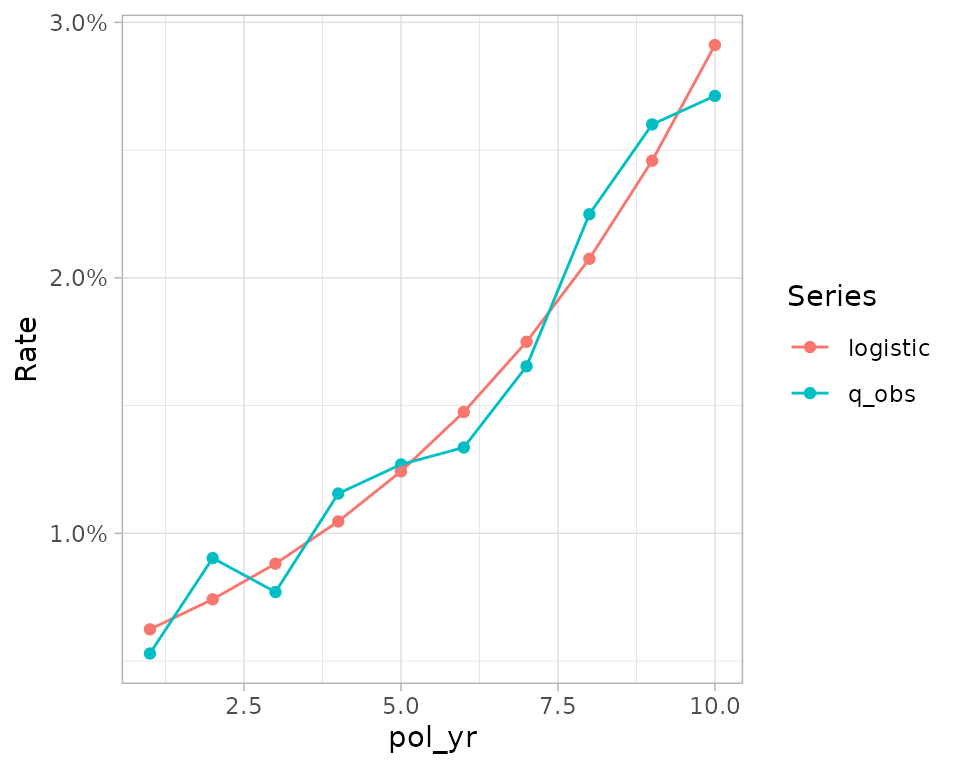

This vignette features functions that are not covered in other vignettes.
library(actxps)
#>
#> Attaching package: 'actxps'
#> The following object is masked from 'package:stats':
#>
#> filter
library(lubridate)
#>
#> Attaching package: 'lubridate'
#> The following objects are masked from 'package:base':
#>
#> date, intersect, setdiff, unionWorking with aggregate experience data
Seriatim-level policy experience data is often not available for analysis. This is almost always the case with industry studies that contain experience data submitted by multiple parties. In these cases, experience is grouped by a several common policy attributes and aggregated accordingly.
The typical workflow in actxps of
expose() |> exp_stats() for termination studies or
expose() |> add_transactions() |> trx_stats() for
transaction studies doesn’t apply if the starting data is aggregated.
That is because another party has already gone through the steps of
creating exposure records and performing an initial level of
aggregation.
Actxps provides two functions designed to work with aggregate experience data.
- For termination studies,
as_exp_df()converts a data frame of aggregate experience into anexp_dfobject, which is the class returned byexp_stats()= For transaction studies,as_trx_df()converts a data frame of aggregate experience into atrx_dfobject, which is the class returned bytrx_stats()
Both object classes have a summary() method which
summarizes experience across any grouping variables passed to the
function. The output of summary() will always be another
exp_df (or trx_df) object, and will look just
like the results of exp_stats() (or
trx_stats()). For downstream reporting, summary results can
be passed to the visualization functions autoplot() and
autotable().
The agg_sim_dat data set contains aggregate experience
on a theoretical block of deferred annuity contracts. Below,
as_exp_df() is used to convert the data to an
exp_df, and summary() is called using multiple
grouping variables.
agg_sim_exp_df <- agg_sim_dat |>
as_exp_df(col_exposure = "exposure_n", col_claims = "claims_n",
conf_int = TRUE,
start_date = 2005, end_date = 2019, target_status = "Surrender")Results summarized by policy year
summary(agg_sim_exp_df, pol_yr)
#> Experience study results
#>
#> Groups: pol_yr
#> Target status: Surrender
#> Study range: 2005 to 2019
#>
#> # A tibble: 15 × 7
#> pol_yr n_claims claims exposure q_obs q_obs_lower q_obs_upper
#> <int> <int> <int> <dbl> <dbl> <dbl> <dbl>
#> 1 1 102 102 19252. 0.00530 0.00431 0.00634
#> 2 2 160 160 17715. 0.00903 0.00768 0.0104
#> 3 3 124 124 16097. 0.00770 0.00640 0.00907
#> 4 4 168 168 14536. 0.0116 0.00984 0.0133
#> 5 5 164 164 12916. 0.0127 0.0108 0.0146
#> 6 6 152 152 11376. 0.0134 0.0113 0.0155
#> 7 7 164 164 9917. 0.0165 0.0141 0.0191
#> 8 8 190 190 8448. 0.0225 0.0194 0.0257
#> 9 9 181 181 6960. 0.0260 0.0223 0.0297
#> 10 10 152 152 5604. 0.0271 0.0230 0.0314
#> 11 11 804 804 4390. 0.183 0.172 0.195
#> 12 12 330 330 2663. 0.124 0.112 0.137
#> 13 13 99 99 1620. 0.0611 0.0500 0.0728
#> 14 14 62 62 872. 0.0711 0.0551 0.0883
#> 15 15 17 17 268. 0.0634 0.0373 0.0932Results summarized by income guarantee presence and product
summary(agg_sim_exp_df, inc_guar, product)
#> Experience study results
#>
#> Groups: inc_guar, product
#> Target status: Surrender
#> Study range: 2005 to 2019
#>
#> # A tibble: 6 × 8
#> inc_guar product n_claims claims exposure q_obs q_obs_lower q_obs_upper
#> <lgl> <fct> <int> <int> <dbl> <dbl> <dbl> <dbl>
#> 1 FALSE a 449 449 12738. 0.0352 0.0321 0.0385
#> 2 FALSE b 392 392 13490. 0.0291 0.0262 0.0320
#> 3 FALSE c 760 760 25895. 0.0293 0.0273 0.0314
#> 4 TRUE a 361 361 19966. 0.0181 0.0163 0.0199
#> 5 TRUE b 273 273 19694. 0.0139 0.0122 0.0155
#> 6 TRUE c 634 634 40851. 0.0155 0.0143 0.0167as_exp_df() and as_trx_df() contain several
arguments for optional calculations like confidence intervals, expected
values, weighting variables, and more. These arguments mirror the
functionality in exp_stats() and trx_stats().
Both functions also contain multiple arguments for specifying column
names associated with required values like exposures and claims.
Policy duration functions
The pol_() family of functions calculates policy years,
months, quarters, weeks, or any other arbitrary duration. Each function
accepts a vector of dates and a vector of issue dates.
Example: assume a policy was issued on 2022-05-10 and we are interested in calculating various policy duration values at the end of calendar years 2022-2032.
dates <- ymd("2022-12-31") + years(0:10)
# policy years
pol_yr(dates, "2022-05-10")
#> [1] 1 2 3 4 5 6 7 8 9 10 11
# policy quarters
pol_qtr(dates, "2022-05-10")
#> [1] 3 7 11 15 19 23 27 31 35 39 43
# policy months
pol_mth(dates, "2022-05-10")
#> [1] 8 20 32 44 56 68 80 92 104 116 128
# policy weeks
pol_wk(dates, "2022-05-10")
#> [1] 34 86 139 191 243 295 347 399 452 504 556The more general pol_interval() function calculates any
arbitrary duration. This function has a third argument where the length
of the policy duration can be specified. This argument must be a period
object. See lubridate::period() for more information.
# days
pol_interval(dates, "2022-05-10", days(1))
#> [1] 236 601 967 1332 1697 2062 2428 2793 3158 3523 3889
# fortnights
pol_interval(dates, "2022-05-10", weeks(2))
#> [1] 17 43 70 96 122 148 174 200 226 252 278Predictive modeling support functions
The add_predictions() function attaches predictions from
any model with a predict() method.
Below, a very simple logistic regression model is fit to surrender
experience in the first ten policy years. Predictions from this model
are then added to exposure records using add_predictions().
This function only requires a data frame of exposure records and a model
with a predict() method. Often, it is necessary to specify
additional model-specific arguments like type to ensure
predict() returns the desired output. In the example below,
type is set to “response” to return probabilities instead
of the default predictions on the log-odds scale.
The col_expected argument is used to rename the
column(s) containing predicted values. If no names are specified, the
default name is “expected”.
# create exposure records
exposed_data <- expose(census_dat, end_date = "2019-12-31",
target_status = "Surrender") |>
filter(pol_yr <= 10) |>
# add a response column for surrenders
mutate(surrendered = status == "Surrender")
# create a simple logistic model
mod <- glm(surrendered ~ pol_yr, data = exposed_data,
family = "binomial", weights = exposure)
exp_res <- exposed_data |>
# attach predictions
add_predictions(mod, type = "response", col_expected = "logistic") |>
# summarize results
group_by(pol_yr) |>
exp_stats(expected = "logistic")
# create a plot
plot_termination_rates(exp_res)
In addition, for users of the tidymodels framework, the actxps
package includes a recipe step function, step_expose(),
that can apply the expose() function during data
preprocessing.
library(recipes)
#> Loading required package: dplyr
#>
#> Attaching package: 'dplyr'
#> The following objects are masked from 'package:stats':
#>
#> filter, lag
#> The following objects are masked from 'package:base':
#>
#> intersect, setdiff, setequal, union
#>
#> Attaching package: 'recipes'
#> The following object is masked from 'package:stats':
#>
#> step
recipe(~ ., data = census_dat) |>
step_expose(end_date = "2019-12-31", target_status = "Surrender")
#>
#> ── Recipe ──────────────────────────────────────────────────────────────────────
#>
#> ── Inputs
#> Number of variables by role
#> predictor: 11
#>
#> ── Operations
#> • Exposed data based on policy years for target status Surrender: <none>